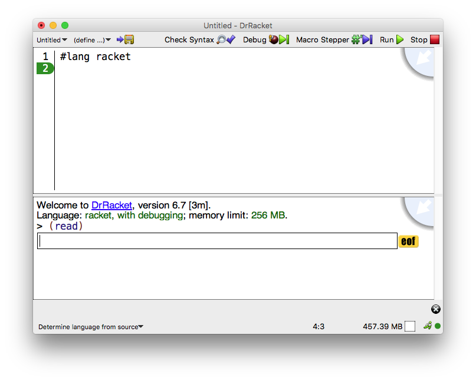

1.6 交互窗口
交互窗口允许你在 > 提示符后输入表达式,以便立即进行评估。 你不能修改最后一个 > 提示前的任何文本。 要输入一个表达式,闪烁的光标必须出现在最后一个提示符之后,也必须出现在提示符之后的空格之后。
当你输入一个完整的表达式并点击回车或回车时,DrRacket 会评估表达式并打印出结果。 打印结果后,DrRacket 为另一个表达式创建一个新的提示。 有些表达式会返回一个特殊的 "void" 值;DrRacket 从不打印 void,而是立即产生一个新的提示符。
如果当前提示符后面的表达式是不完整的,那么 DrRacket 将不会尝试评估它。 在这种情况下,点击 Enter 或 Return 会产生一个新的、自动缩进的行。 你可以通过输入Alt-Return或Command-Return(取决于你的平台)来强制 DrRacket 评估该表达式。
要将 previous expression 复制到当前提示符下,请输入 ESC-p(即输入 Escape,然后输入 p)。 多次输入 ESC-p 来 cycle back through old expressions 。 输入 ESC-n 可以在旧的表达式中向前循环。 还有其他具有这些相同功能的按键;见 键盘快捷键 和 Edit 菜单中的 Show Active Keybindings 菜单项。
点击 Run 按钮可以在 definitions window 中评估程序,并使程序的定义在交互窗口中可用。 点击 Run 也会重置交互窗口,擦除所有旧的交互,从交互环境中删除旧的定义。 尽管 Run 擦除了旧的 > 提示,但是 ESC-p 和 ESC-n 仍然可以检索到旧的表达式。
1.6.1 错误
每当 DrRacket 在评估表达式时遇到错误, 它就会在交互窗口中打印出一条错误信息,并高亮显示引发错误的表达式。 突出显示的表达式可能在定义窗口中,也可能在交互窗口的旧提示之后。
对于某些类型的错误,DrRacket 会将错误信息的一部分变成一个超链接。 点击超链接可以获得与错误有关的函数或关键词的帮助。
对于某些运行时错误,DrRacket 会在错误信息旁边显示一个错误图标。 点击错误图标可以打开一个窗口,显示错误发生时正在评估的表达式的 "堆栈"。 此外,如果堆栈中的表达式出现在 definitions window 中, 那么从堆栈中的下一个较深的表达式开始,会有一个红色箭头指向每个表达式。
1.6.2 输入和输出
许多 Racket 程序避免显式的输入和输出操作,通过 interactions window 中的直接函数调用获得输入,并通过返回值产生输出。 其他的 Racket 程序在评估过程中使用 write 或 display 明确地为用户打印输出, 或者使用 read 或 read-char 明确要求用户输入。
明确的输入和输出出现在 interactions window 中,但在特殊的框内,将明确的 I/O 与正常的表达式和结果分开。 例如,在交互窗口中评估
> (read)
会产生一个特殊的输入框,用于输入:

在框中输入一个数字并点击回车,这个数字就成为 (read) 表达式的结果。 一旦为输入框提交了文本,它就会被移到输入框外,当 DrRacket 显示新的提示时,它就会隐藏交互框。 因此,如果你在上面的输入框中输入 5 并点击返回,结果会出现如下:
> (read) 5 5 > _
在这种情况下,第一个 5 是输入,第二个 5 是 (read) 表达的结果。 第二个 5 的颜色为蓝色,和 DrRacket 打印的结果一样。 (下划线表示闪烁的光标的位置)。
输出直接进入 interactions window 。如果你运行该程序
#lang racket (define v (read)) (display v) (newline) v
并提供输入的 S 表达式 (1 2), 交互窗口最终显示如下:
(1 2) (1 2) '(1 2) > _
在这个例子中, display 产生的输出紧跟在你输入的输入下面,最后打印的是最终结果。 显示的输出是用紫色绘制的。 (上面的例子假设是默认打印。 如果采用构造函数式的数值打印,提示符前的最终结果将是 (list 1 2) 。)
在交互窗口中逐行输入相同的程序会产生不同的结果:
> (define v (read)) (1 2) > (display v) (1 2) > v '(1 2) > _
根据输入操作的不同,你可能在输入框中输入的文本比消耗的多。 在这种情况下,剩余的文本会保留在输入流中供以后读取。 例如,在下面的交互中,为响应第一个 (read) 而提供了两个值,所以第二个 (read) 的值会立即返回:
> (read) 5 6 5 > (read) 6 > _
下面的例子说明,用 Return 提交输入会在输入流中插入一个换行字符:
> (read) 5 5 > (read-char) #\newline > _
出现在输入框旁边的 eof 按钮向输入流插入一个 eof-object ,但在以后的序列中可能会有更多的 IO。 例如,在下面的交互中,用户输入了 1 ,然后点击了 eof 按钮:
> (read-char) 1#\1 > (read-char) #<eof>
然而,在这一点上,未来的交互仍然可以发生:对输入函数的新调用会打开一个新的输入框,新的字符会来自同一个端口。
在 #lang racket 模块中, 顶层表达式的打印结果与在 interactions window 中输入的表达式的结果相同。 原因是 #lang racket 明确使用 (current-print) 打印顶级表达式的结果, 而 DrRacket 将 (current-print) 设置为打印值,与交互的方式相同。